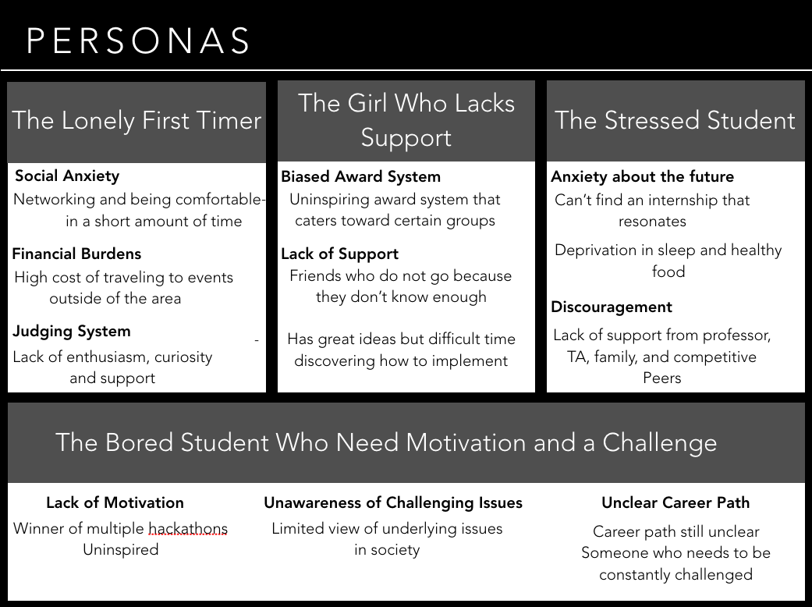

Trader Joe's On the Go
Working here deepened my love and respect for this brand.

Trader Joe's evolved into my grocery store once I had to start buying my own. Aside from the low prices, good quality, and friendly employees, I also felt a sense of peace and satisfaction when I go to buy my supply for the week. I started working here about 5 months during the busy holiday season and got to see how they run from the inside. This whole experience has added onto why I love this brand and why I will forever support them.
Understanding the Problem
I was able to gather feedback from many students from across their northeast and midwest on their perspective and how to improve. The common pain points that I found were:
- Awareness of underlying problems in society, seeking meaningful work
- Financial burdens
- Stress managing coursework and applying to real life
- Unclear structure of how a hackathon works
- Social anxiety

Designing a Solution
I designed a simple web app to help students visually understand the thought process towards making a hackathon more efficient and to improve time management.
InVision design